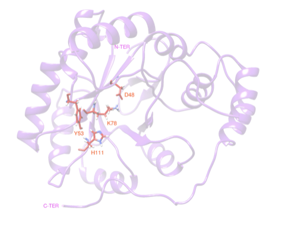

Thesis
Compositional Zero-Shot Generation of Protein Conformational Ensembles Conditioned on Ligands
Score-based generative models with E(3)-equivariant graph neural networks.
Read the thesis (PDF)The thesis is written in Spanish; the abstract is in English.